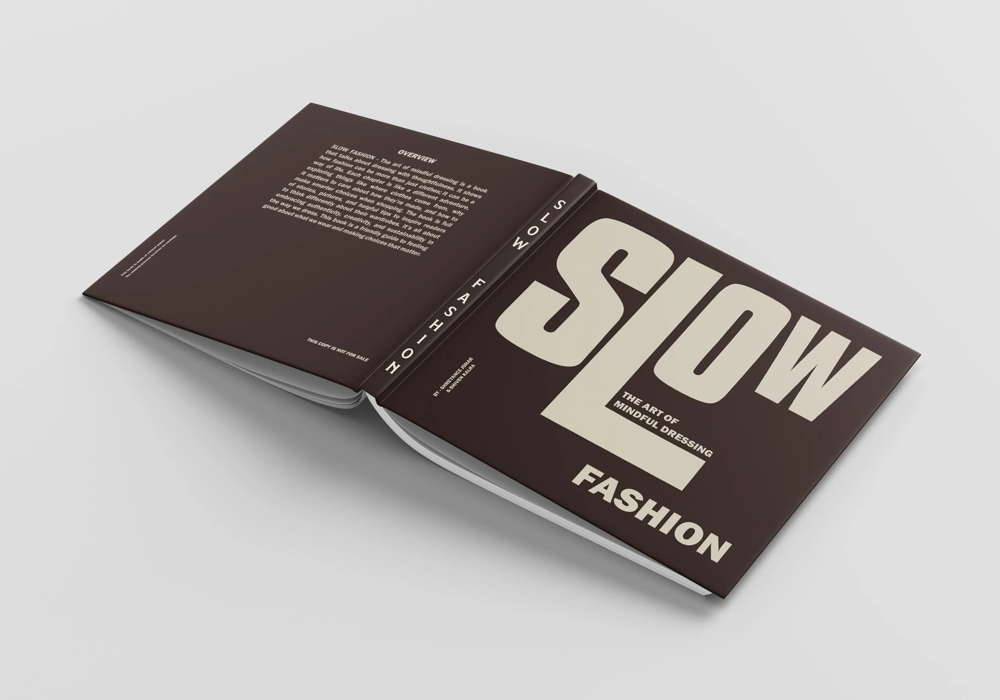
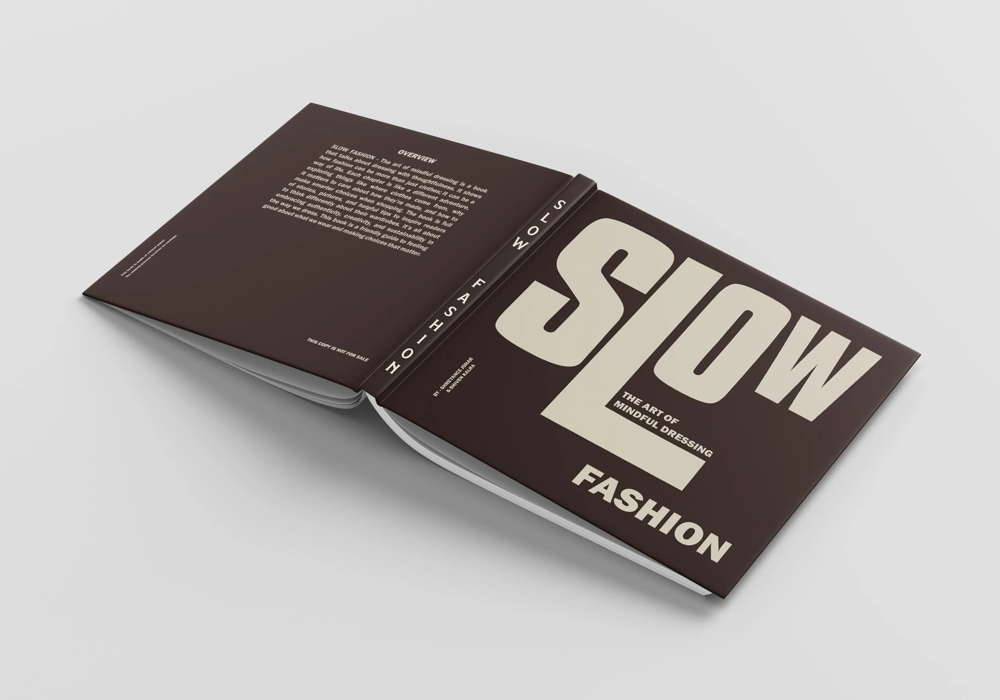

1 Month
16 Sept 2024 - 18 Oct 2024
This project critically analyzes the intersection of fashion and business by examining Allen Solly's product category through fashion marketing, buying, and trend forecasting. Utilizing insights from WGSN, key SS26 trends were identified to inform the development of a new collection aligned with emerging consumer preferences and market demands.
hrough comprehensive Allen Solly brand research and competitive analysis, a market-responsive collection was developed, integrating trend-driven aesthetics, commercial viability, and brand identity.

Allen Solly’s SS26 Casual Striped Shirts collection, titled "Wear your way, everyday," celebrates inclusivity and versatility, offering a timeless, sustainable solution for men of all ages. Crafted from organic and recycled cotton, these shirts provide comfort, durability, and style that seamlessly adapts to every life stage—from business meetings to college life to coffee with childhood friends. The collection highlights how these shirts cater to men in their 20s, 40s, and 60s, emphasising a style that has no age limit and can be carried by men of all ages. Catered towards fashion-conscious men seeking sustainable, durable, and comfortable clothing that works for any occasion. Through diverse age representation and trendy designs, the collection positions Allen Solly as the go-to brand for modern, sustainable fashion that evolves with every man’s journey.
 



This project offered valuable insights into bridging creativity with functionality. It reinforced the importance of:
Consumer-Centric Design: Solving real-world problems rather than solely focusing on aesthetics.
Feedback Integration: Iterative logo design through peer and mentor feedback ensured simplicity and recall value.
Challenges: Identifying a brand name and logo that balances uniqueness and memorability.
Addressing scalability and sustainability while appealing to both fashion-forward and non-fashion-centric audiences.
Key Takeaways: Understanding market demands extends beyond design; it requires empathy, adaptability, and strategic thinking. Feedback loops and real-world applications are crucial to achieving a brand’s success.